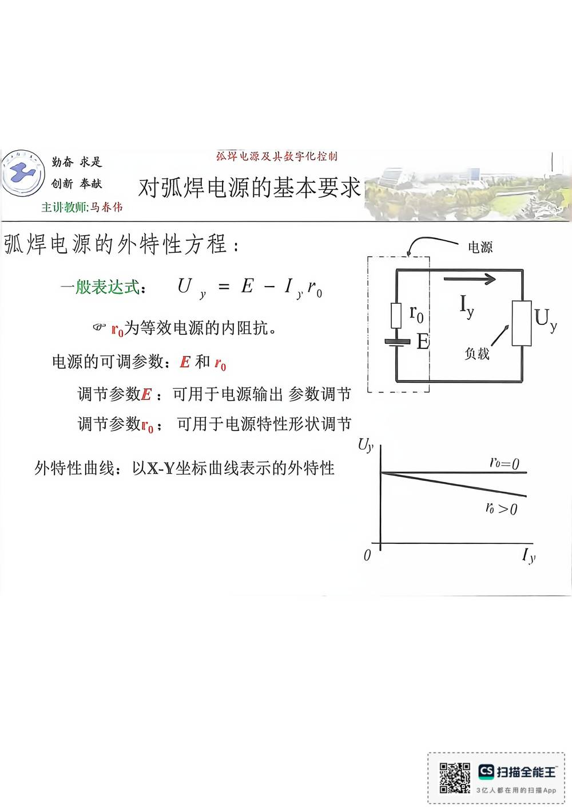

13 手写笔记/1~5周/h-w1-012 弧焊电源的外特性方程：
h-w1-012 弧焊电源的外特性方程：
📷 原图：
1~5周 焊接电源(1).pdf第 12 页（整页扫描，本库内嵌h-w1-012.jpg）
弧焊电源的外特性方程：

本页文字（OCR 整理）
- 弧焊电源的外特性方程：
- 一股表达式：U，=E-1、”o
- @r。为等效电源的内阻抗。
- 电源的可调参数：正和r。
- 调节参数E：可用于电源输出参数调节
- 调节参数ro：可用于电源特性形状调节
- 外特性曲线：以X-Y坐标曲线表示的外特性
本页重点（自动标记：含"定义/特点/要求/结论/公式"等，或与课件原句高度一致）
- @r。为等效电源的内阻抗。
- 调节参数E：可用于电源输出参数调节
OCR 说明
文字由 macOS Vision 识别手写体/翻拍页面得到，错字难免（如"弧"误识为"孤"）；重点标记据此推断，请以页图为准。
对应讲义页
关联
- ← 上一页 · 总览 · 下一页 →
- 讲义：00 第2章 基本电气特性 导航 · 概念：04 概念地图